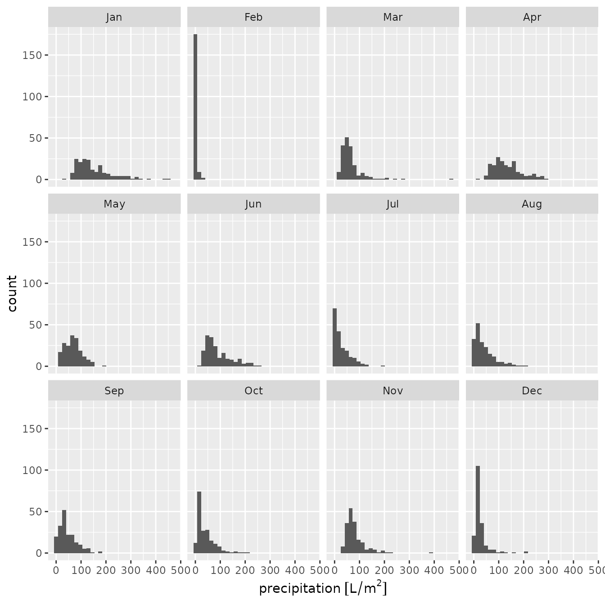

library(meteospain)
library(dplyr)
#>
#> Attaching package: 'dplyr'
#> The following objects are masked from 'package:stats':
#>
#> filter, lag
#> The following objects are masked from 'package:base':
#>
#> intersect, setdiff, setequal, union
library(ggplot2)
library(ggforce)
library(units)
#> udunits database from /usr/share/xml/udunits/udunits2.xml
library(sf)
#> Linking to GEOS 3.12.1, GDAL 3.8.4, PROJ 9.4.0; sf_use_s2() is TRUE
library(keyring)MeteoCat service
MeteoCat is the Catalonian
meteorologic service. It offers access to different meteorological data
and information, being one of their main missions to curate and
circulate data from meteorological stations. meteospain
only access to the automatic meteorological stations network data.
MeteoCat options
Temporal resolution
meteospain offers access to the MeteoCat API at
different temporal resolutions:
- “instant”, returning the latest 4 hours of measures for all or selected stations.
- “hourly”, returning all measures (some stations has timesteps of 30 min, others 60 min, others more) for all or selected stations.
- “daily”, returning daily aggregates for the month in the date provided, i.e. if ‘2020-04-10’ is provided as start_date, all daily values for April 2020 will be returned.
- “monthly”, returning monthly aggregates for the year in the date provided, i.e. if ‘2020-04-10’ is provided as start_date, all monthly values for 2020 will be returned.
- “yearly”, returning yearly aggregates for all years available. In this case date provided is ignored.
In “daily” and “monthly”, a start_date argument must be
provided, indicating the date from which retrieve the data as explained
earlier. For more info see
vignette('api_limits', package = 'meteospain').
Stations
meteospain access the data in the MeteoCat API
collecting all stations. If a character vector of stations codes is
supplied in the stations argument, a filter step is done
before returning the data to maintain only the stations supplied.
MeteoCat API Key
MeteoCat API only allow access to the data with a personal API Key.
This token must be included in the api_key argument of
meteocat_options function.
To obtain the API Key, please visit https://apidocs.meteocat.gencat.cat/ and follow the
instructions there.
It is not advisable to use the keys directly in any script shared or publicly available (github…), neither store them in plain text files. One option is using the keyring package for managing and accessing keys:
install.packages('keyring')
library(keyring)
key_set('meteocat') # A prompt asking for the secret (the API Key) will appear.Examples
# current day, all stations
api_options <- meteocat_options(
resolution = 'instant',
api_key = key_get('meteocat')
)
api_options#> $resolution
#> [1] "instant"
#>
#> $start_date
#> [1] "2025-10-01"
#>
#> $stations
#> NULL
#>
#> $api_key
#> [1] "my_api_key"
# daily, all stations
api_options <- meteocat_options(
resolution = 'daily',
start_date = as.Date('2020-04-10'),
api_key = key_get('meteocat')
)
api_options#> $resolution
#> [1] "daily"
#>
#> $start_date
#> [1] "2020-04-25"
#>
#> $stations
#> NULL
#>
#> $api_key
#> [1] "my_api_key"MeteoCat stations info
Accessing station metadata for MeteoCat is simple:
get_stations_info_from('meteocat', api_options)
#> Simple feature collection with 244 features and 5 fields
#> Geometry type: POINT
#> Dimension: XY
#> Bounding box: xmin: 0.30565 ymin: 40.55219 xmax: 3.18147 ymax: 42.77011
#> Geodetic CRS: WGS 84
#> # A tibble: 244 × 6
#> service station_id station_name station_province altitude
#> * <chr> <chr> <chr> <chr> [m]
#> 1 meteocat AN Barcelona - Av. Lluís Companys Barcelona 7.5
#> 2 meteocat C6 Castellnou de Seana Lleida 264
#> 3 meteocat C7 Tàrrega Lleida 427
#> 4 meteocat C8 Cervera Lleida 554
#> 5 meteocat C9 Mas de Barberans Tarragona 240
#> 6 meteocat CA Clariana de Cardener Lleida 693
#> 7 meteocat CB les Llosses Girona 700
#> 8 meteocat CC Orís Barcelona 626
#> 9 meteocat CD la Seu d'Urgell - Bellestar Lleida 849
#> 10 meteocat CE els Hostalets de Pierola Barcelona 316
#> # ℹ 234 more rows
#> # ℹ 1 more variable: geometry <POINT [°]>MeteoCat data
api_options <- meteocat_options(
resolution = 'monthly',
start_date = as.Date('2020-04-01'),
api_key = key_get('meteocat')
)
catalunya_2020 <- get_meteo_from('meteocat', options = api_options)
#> ℹ Data provided by meteo.cat © Servei Meteorològic de Catalunya
#> https://www.meteo.cat/wpweb/avis-legal/#info
catalunya_2020
#> Simple feature collection with 2255 features and 45 fields
#> Geometry type: POINT
#> Dimension: XY
#> Bounding box: xmin: 0.30565 ymin: 40.55786 xmax: 3.18147 ymax: 42.77011
#> Geodetic CRS: WGS 84
#> # A tibble: 2,255 × 46
#> timestamp service station_id station_name station_province altitude
#> * <dttm> <chr> <chr> <chr> <chr> [m]
#> 1 2020-01-01 00:00:00 meteoc… C6 Castellnou … Lleida 264
#> 2 2020-01-01 00:00:00 meteoc… C7 Tàrrega Lleida 427
#> 3 2020-01-01 00:00:00 meteoc… C8 Cervera Lleida 554
#> 4 2020-01-01 00:00:00 meteoc… C9 Mas de Barb… Tarragona 240
#> 5 2020-01-01 00:00:00 meteoc… CC Orís Barcelona 626
#> 6 2020-01-01 00:00:00 meteoc… CD la Seu d'Ur… Lleida 849
#> 7 2020-01-01 00:00:00 meteoc… CE els Hostale… Barcelona 316
#> 8 2020-01-01 00:00:00 meteoc… CG Molló - Fab… Girona 1405
#> 9 2020-01-01 00:00:00 meteoc… CI Sant Pau de… Girona 852
#> 10 2020-01-01 00:00:00 meteoc… CJ Organyà Lleida 566.
#> # ℹ 2,245 more rows
#> # ℹ 40 more variables: mean_temperature [°C], mean_temperature_classic [°C],
#> # min_temperature_absolute [°C], min_temperature_mean [°C],
#> # max_temperature_absolute [°C], max_temperature_mean [°C],
#> # max_thermal_amplitude [°C], mean_thermal_amplitude [°C],
#> # extreme_thermal_amplitude [°C], mean_relative_humidity [%],
#> # min_relative_humidity_absolute [%], min_relative_humidity_mean [%], …Visually:
catalunya_2020 |>
units::drop_units() |>
mutate(month = lubridate::month(timestamp, label = TRUE)) |>
ggplot() +
geom_sf(aes(colour = mean_temperature)) +
facet_wrap(vars(month), ncol = 4) +
scale_colour_viridis_c()
catalunya_2020 |>
mutate(month = lubridate::month(timestamp, label = TRUE)) |>
ggplot() +
geom_histogram(aes(x = precipitation)) +
facet_wrap(vars(month), ncol = 4)
#> `stat_bin()` using `bins = 30`. Pick better value `binwidth`.
#> Warning: Removed 25 rows containing non-finite outside the scale range
#> (`stat_bin()`).